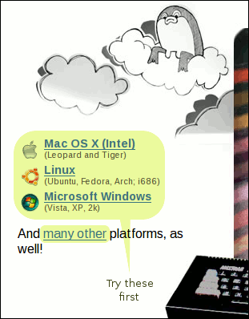
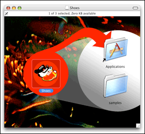
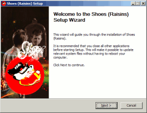
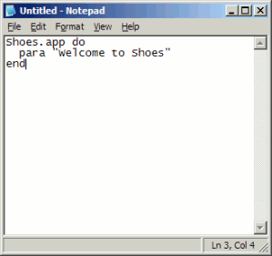
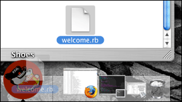
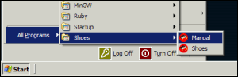
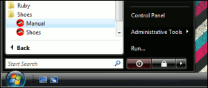

The Shoes Manual
Installing Shoes
Okay, on to installing Shoes. I'm sure you're wondering: do I need to install Ruby? Do I need to unzip anything? What commands to I need to type?
Nope. You don't need Ruby. You don't need WinZip. Nothing to type.
On most systems, starting Shoes is just a matter of running the installer and clicking the Shoes icon. Shoes comes with everything built in. We'll talk through all the steps, though, just to be clear about it.
Step 1: Installing Shoes
You'll want to visit shoooes.net to download the Shoes installer. Usually, you'll just want one of the installers on the top corner of the home page. 
Here's how to run the installer:
- On Mac OS X, you'll have a file ending with .dmg. Double-click this file and a window should appear with a Shoes icon and an Applications folder. Following the arrow, drag the Shoes icon into the Applications folder. 
- On Windows, you'll download a .exe file. Double-click this file and follow the instructions. 
- On Linux, you'll download a file ending with .run. Double-click this file and Shoes will start up. (You can also run this file from a prompt as if it was a shell script. In fact, it is a shell script!)
Step 2: Start a New Text File
Shoes programs are just plain text files ending with a .rb extension.
Here are a few ways to create a blank text file:
- On Mac OS X, visit your Applications folder and double-click on the TextEdit app. A blank editor window should come up. Now, go to the Format menu and select the Make Plain Text option. Okay, you're all set!

- On Windows, go to the Start menu. Select All Programs, then Accessories, then Notepad. 
- On Linux, most distros come with gedit. You might try running that. Or, if your distro is KDE-based, run kate.
Now, in your blank window, type in the following:
Shoes.app do
background "#DFA"
para "Welcome to Shoes"
end
Save to your desktop as welcome.rb.
Step 3: Run It! Go Shoes!
To run your program:
- On Mac OS X, visit your Applications folder again. This time, double-click the Shoes icon in that folder. You should see the red shoes icon appear in the dock. Drag your
welcome.rbfrom the desktop on to that dock icon.  - On Windows, get to the Start menu. Go into All Programs, then Shoes, then Shoes. A file selector box should come up. Browse to your desktop and select
welcome.rb. Click OK and you're on your way.   - On Linux, run Shoes just like you did in step one. You should see a file selector box. Browse to your desktop, select
welcome.rband hit OK.
So, not much of a program yet. But it's something! You've got the knack of it, at least!
What Can You Make With Shoes?
Well, you can make windowing applications. But Shoes is inspired by the web, so applications tend to use images and text layout rather than a lot of widgets. For example, Shoes doesn't come with tabbed controls or toolbars. Shoes is a tiny toolkit, remember?
Still, Shoes does have a few widgets like buttons and edit boxes. And many missing elements (like tabbed controls or toolbars) can be simulated with images.
Shoes is written in part thanks to a very good art engine called Cairo, which is used for drawing with shapes and colors. In this way, Shoes is inspired by NodeBox and Processing, two very good languages for drawing animated graphics.
Next: The Rules of Shoes